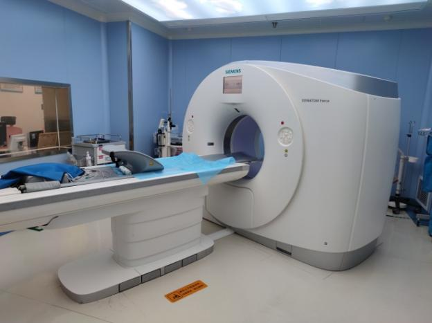
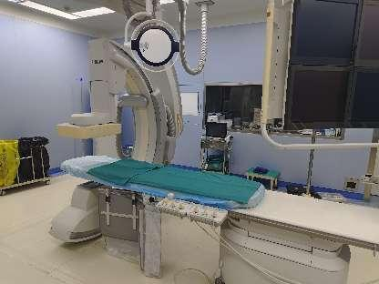
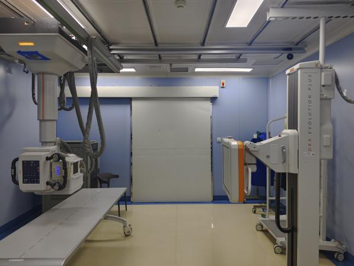
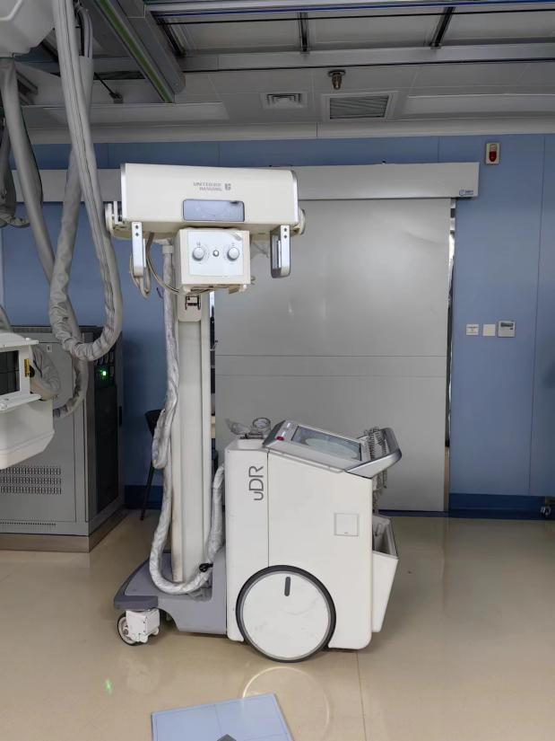
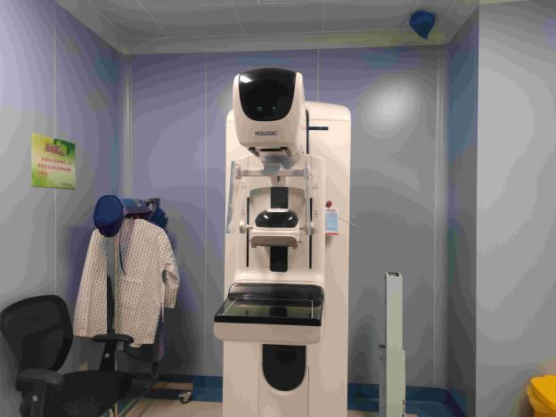
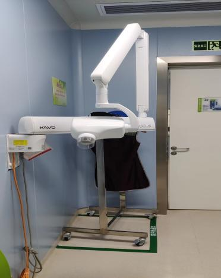
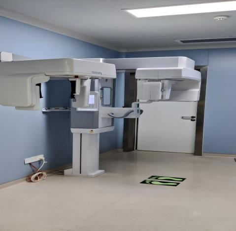
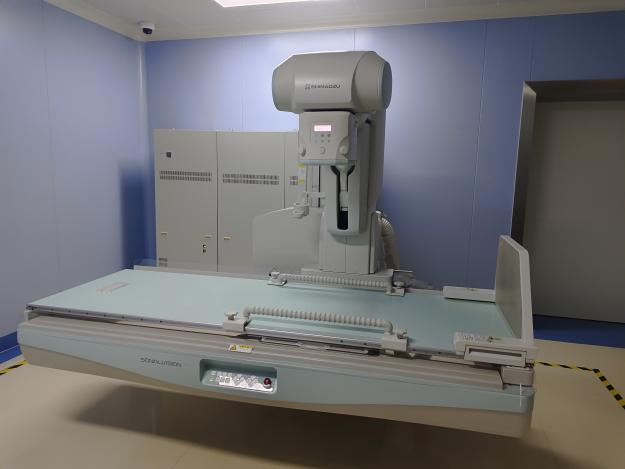
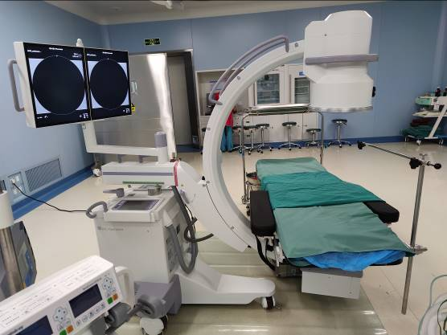

检 测 报 告
QNJC-2025-0293-FW
项目名称： | 放射诊疗设备质量控制检测 |
委托单位： | 西安国际医学中心医院 |
检测性质： | 委托检测 |
报告日期： | 2024年12月10日 |
陕西秦洲核与辐射安全技术有限公司
（检验检测专用章）
检 测 报 告
QNJC-2025-0293-FW
项目名称： | 放射诊疗设备质量控制检测 |
委托单位： | 西安国际医学中心医院 |
检测性质： | 委托检测 |
报告日期： | 2024年12月10日 |
陕西秦洲核与辐射安全技术有限公司
（检验检测专用章）
报告说明
1.本报告适用于陕西秦洲核与辐射安全技术有限公司电离辐射、电磁辐射等项目的检测报告。
2.本报告无陕西秦洲核与辐射安全技术有限公司“检验检测专用章”、无骑缝章、无章、无编制人、审核人、签发人签字无效。
3.现场检测，检测结果仅对当次检测时工况负责，委托方需对自己提供的工况等信息负责。
4.如委托单位对本报告检测数据有异议，应于收到本报告之日起十五日内向本公司提出书面申诉，逾期则视为认可检测结果。
5.本报告全部或部分复制，私自转让、盗用、冒用、涂改或以其他任何形式篡改的均属无效。
6.未经我公司同意，本报告不得用于委托范围之外的其他商业用途。
7.*为分包检测结果。
名 称：陕西秦洲核与辐射安全技术有限公司
地 址：陕西省西咸新区沣西新城中国西部科技创新港创科大厦12层
电 话：029-89586445
传 真：029-89586445
网 址：www.qznrs.net
邮政编码：712046
项目名称 | 放射诊疗设备质量控制检测 | 放射诊疗设备质量控制检测 | 放射诊疗设备质量控制检测 | ||||||
委托单位 | 西安国际医学中心医院 | 西安国际医学中心医院 | 西安国际医学中心医院 | ||||||
检测地点 | 陕西省西安市长安区西太一级公路东侧 | 陕西省西安市长安区西太一级公路东侧 | 陕西省西安市长安区西太一级公路东侧 | ||||||
联系人 | 杨 鹏 | 联系电话 | 173 9183 7290 | ||||||
检测类别 | 状态检测 | 检测日期 | 2024年9月20日 | ||||||
证书编号 | （陕）卫放技字〔2024〕第014号 | （陕）卫放技字〔2024〕第014号 | （陕）卫放技字〔2024〕第014号 | ||||||
检测及评价依据 | 《医用X射线诊断设备质量控制检测规范》（WS 76-2020） 《X射线计算机体层摄影装置质量控制检测规范》（WS 519-2019） 《锥形束 X 射线计算机体层成像(CBCT)设备质量控制检测标准》（WS 818-2023） | 《医用X射线诊断设备质量控制检测规范》（WS 76-2020） 《X射线计算机体层摄影装置质量控制检测规范》（WS 519-2019） 《锥形束 X 射线计算机体层成像(CBCT)设备质量控制检测标准》（WS 818-2023） | 《医用X射线诊断设备质量控制检测规范》（WS 76-2020） 《X射线计算机体层摄影装置质量控制检测规范》（WS 519-2019） 《锥形束 X 射线计算机体层成像(CBCT)设备质量控制检测标准》（WS 818-2023） | ||||||
检测结果及结论 | 检测结果详见表3-1至表3-9；检测结论详见表4 | 检测结果详见表3-1至表3-9；检测结论详见表4 | 检测结果详见表3-1至表3-9；检测结论详见表4 | ||||||
附件 | / | / | / | ||||||
备注 | / | / | / | ||||||
一、检测仪器及模体
表1 检测仪器及主要模体基本信息
仪器/模体名称 | 型号/规格 | 编号 | 测量范围 | 溯源单位/证书编号 | 有效期至 |
X射线影像质量评估系统 （主机：Raysafe X2 Base Unit） | 摄影/透视 探头： R/F Sensor | QNJC-YQ-104 | 1nGy~9999Gy 1nGy/s~500mGy/s | 中国测试技术研究院/校准字第202302002832号 | 2024.02.08 |
X射线影像质量评估系统 （主机：Raysafe X2 Base Unit） | 摄影/透视 探头： R/F Sensor | QNJC-YQ-104 | （40~150）kV 1ms~999s | 中国测试技术研究院/校准字第202302002854号 | 2024.02.08 |
X射线影像质量评估系统 （主机：Raysafe X2 Base Unit） | 摄影/透视 探头： R/F Sensor | QNJC-YQ-104 | （1~14mmAl） | / | / |
X射线影像质量评估系统 （主机：Raysafe X2 Base Unit） | 乳腺探头： MAM Sensor | QNJC-YQ-104 | 1μGy~9999Gy 10μGy/s~300mGy/s | 中国测试技术研究院/校准字第202302002845号 | 2024.02.08 |
X射线影像质量评估系统 （主机：Raysafe X2 Base Unit） | 乳腺探头： MAM Sensor | QNJC-YQ-104 | （20~50）kV； 1ms~999s | 中国测试技术研究院/校准字第202302002860号 | 2024.02.08 |
X射线影像质量评估系统 （主机：Raysafe X2 Base Unit） | 乳腺探头： MAM Sensor | QNJC-YQ-104 | （0.2~3.6）mmAl | / | / |
X射线影像质量评估系统 （主机：Raysafe X2 Base Unit） | CT探头： CT Sensor | QNJC-YQ-104 | 10μGy~999Gy | 中国测试技术研究院/校准字第202302002851号 | 2024.02.08 |
X射线影像质量评估系统 （主机：Raysafe X2 Base Unit） | 光学探头： +Light Sensor | QNJC-YQ-104 | （0.01~10000）cd/m2
| 中国测试技术研究院/校准字第202302006804号 | 2024.02.16 |
准直度检测板、线束垂直度测试筒 | ZZ-100 | QNJC-YQ-105 | / | / | / |
空间分辨力测试卡 | Type 81 | QNJC-YQ-107 | （0.6~10.0）lp/mm | / | / |
低对比度细节检测模体 | DD-19 | QNJC-YQ-109 | 0.35%~16.0% | / | / |
屏/片X射线摄影密着检测板 | FFA 4090R | QNJC-YQ-111 | / | / | / |
十字铅尺 | PR-100 | QNJC-YQ-112 | （0~300）mm | 陕西省计量科学研究院/ CD10224043Z号 | 2024.08.10 |
钢直尺 | 0~500mm | QNJC-YQ-113 | （0~500）mm | 中国测试技术研究院/检定字第202310004895号 | 2024.10.29 |
CT性能检测 模体 | Catphan500 | QNJC-YQ-114 | / | / | / |
CT纯水层模体 | CTWT-100 | QNJC-YQ-115 | / | / | / |
CT头体部 剂量模体 | HB-100 | QNJC-YQ-116 | / | / | / |
牙科模体 | DigiDent P | QNJC-YQ-119 | （1.6~3.0）lp/mm；0.5mmAl，1.0~2.5mm | / | / |
口腔CT性能 测试模体 | OCTP-100 | QNJC-YQ-127 | （1.0、1.3、2.0）lp/mm （1、2、3、4、5）mm | / | / |
乳腺性能 检测模体 | AEC-100 | QNJC-YQ-117 | / | / | / |
乳腺阈对比度细节模体 | Pro-MAM | QNJC-YQ-118 | / | / | / |
DSA性能 检测模体 | DSA-SR1 | QNJC-YQ-128 | / | / | / |
二、射线装置
表2 射线装置基本信息[1]
序号 | 装置名称 | 型号 | 编号 | 生产厂家 | 额定 参数 | 安装/检测场所 | 射线装置分类 |
1 | X射线计算机体层摄影设备 | SOMATOM Force | 76040 | 西门子医疗 有限公司 | 150kV 1300mA | E楼1层 CT检查室1 | Ⅲ类 |
2 | 医用血管造影 X射线系统 | UNIQ FD20 | 2304 | 飞利浦医疗系统荷兰有限公司 | 125kV 1000mA | B楼2层 消化介入科DSA室 | Ⅱ类 |
3 | 数字化医用X射线摄影系统 | DRX-Evolution Plus | 9111 | Carestream Health,Inc. | 150kV 500mA | E楼1层 DR检查室1 | Ⅲ类 |
4 | 移动式数字化医用X射线摄影系统 | uDR 370i | 402861 | 联影 | 150kV 320mA | 急诊科 | Ⅲ类 |
5 | 数字化乳腺X射线摄影系统 | Selenia Dimensions | GAN170100292 | 豪洛捷 | 49kV 200mA | 乳腺摄影室01 | Ⅲ类 |
6 | 口内X射线机 | FOCUS | 73902B | 英迈杰有限责任公司 | 70kV 7mA | 医院D楼3楼口腔科诊区牙片室 | Ⅲ类 |
7 | 口腔颌面锥形束计算机体层摄影设备 | PP3-1 | SE1902274 | 思瑞德斯有限责任公司 | 90kV 16mA | 医院D楼3楼口腔科诊区口腔CT室 | Ⅲ类 |
8 | 数字化X射线透视摄影系统 | SONIALVISION | MP0001E94001 | 岛津 | 150kV 800mA | E楼1层数字胃肠室05 | Ⅲ类 |
9 | 移动式C形臂X射线机 | OEC Fluorostar | 79-C9699D | GE | 110kV 20mA | 麻醉手术中心OR07 | Ⅲ类 |
注：[1]委托方提供的信息。
三、检测结果
表3-1 检测结果（X射线计算机体层摄影设备）
装置名称 | 装置名称 | X射线计算机体层摄影设备 | X射线计算机体层摄影设备 | X射线计算机体层摄影设备 |
 |
|
| ||||||||||||||
装置型号 | 装置型号 | SOMATOM Force | SOMATOM Force | SOMATOM Force |
|
|
| ||||||||||||||
装置编号 | 装置编号 | 76040 | 76040 | 76040 |
|
|
| ||||||||||||||
生产厂家 | 生产厂家 | 西门子医疗有限公司 | 西门子医疗有限公司 | 西门子医疗有限公司 |
|
|
| ||||||||||||||
安装/检测场所 | 安装/检测场所 | E楼1层CT检查室1 | E楼1层CT检查室1 | E楼1层CT检查室1 |
|
|
| ||||||||||||||
序号 | 检测项目 | 检测项目 | 检测条件 | 状态检测判定标准 | 状态检测判定标准 | 检测结果 | 结论 | ||||||||||||||
1 | 诊断床定位精度 | 诊断床定位精度 | 负重70kg左右 | 定位：±2mm内 | 定位：±2mm内 | 0.5mm | 合格 | ||||||||||||||
1 | 诊断床定位精度 | 诊断床定位精度 | 负重70kg左右 | 归位：±2mm内 | 归位：±2mm内 | 0.4mm | 合格 | ||||||||||||||
2 | 定位光精度 | 定位光精度 | 120kV 210mAs s=10mm | ±3mm内 | ±3mm内 | 0.7mm | 合格 | ||||||||||||||
3 | 重建层厚偏差 | 重建层厚偏差 | 120kV 210mAs s=10mm | s[1]＞2mm：±1mm内 | s[1]＞2mm：±1mm内 | -0.1mm | 合格 | ||||||||||||||
4 |
|
| 120kV 210mAs s=10mm | 头部模体：与厂家说明书指标相差±20%内，若无说明书技术指标参考，应≤50mGy | 头部模体：与厂家说明书指标相差±20%内，若无说明书技术指标参考，应≤50mGy | 39.4mGy | 合格 | ||||||||||||||
5 | CT值（水） | CT值（水） | 120kV 210mAs s=10mm | ±6HU内 | ±6HU内 | -0.1HU | 合格 | ||||||||||||||
6 | 均匀性 | 均匀性 | 120kV 210mAs s=10mm | ±6HU内 | ±6HU内 | 0.3HU | 合格 | ||||||||||||||
7 | 噪声 | 噪声 | 120kV 210mAs s=10mm | <0.45% | <0.45% | 0.25% | 合格 | ||||||||||||||
8 | 高对比分辨力 | 高对比分辨力 | 120kV 210mAs s=10mm | 常规算法：>5.0lp/cm | 常规算法：>5.0lp/cm | 7.0lp/cm | 合格 | ||||||||||||||
9 | 低对比可探测能力 | 低对比可探测能力 | 120kV 210mAs s=10mm | <3.0mm | <3.0mm | 2.8mm | 合格 | ||||||||||||||
注：s为层厚。
表3-2 检测结果（医用血管造影X射线系统）
装置名称 | 装置名称 | 医用血管造影X射线系统 | 医用血管造影X射线系统 | 医用血管造影X射线系统 |
 |
|
| ||||||||||||||||||||||||||||||||||||||||||||||||||||||||
装置型号 | 装置型号 | UNIQ FD20 | UNIQ FD20 | UNIQ FD20 |
|
|
| ||||||||||||||||||||||||||||||||||||||||||||||||||||||||
装置编号 | 装置编号 | 2304 | 2304 | 2304 |
|
|
| ||||||||||||||||||||||||||||||||||||||||||||||||||||||||
生产厂家 | 生产厂家 | 飞利浦医疗系统荷兰有限公司 | 飞利浦医疗系统荷兰有限公司 | 飞利浦医疗系统荷兰有限公司 |
|
|
| ||||||||||||||||||||||||||||||||||||||||||||||||||||||||
安装/检测场所 | 安装/检测场所 | B楼2层消化介入科DSA室 | B楼2层消化介入科DSA室 | B楼2层消化介入科DSA室 |
|
|
| ||||||||||||||||||||||||||||||||||||||||||||||||||||||||
序号 | 检测项目 | 检测项目 | 检测条件 | 状态检测判定标准 | 状态检测判定标准 | 检测结果 | 结论 | ||||||||||||||||||||||||||||||||||||||||||||||||||||||||
X射线透视设备通用检测项目 | X射线透视设备通用检测项目 | X射线透视设备通用检测项目 | X射线透视设备通用检测项目 | X射线透视设备通用检测项目 | X射线透视设备通用检测项目 | X射线透视设备通用检测项目 | X射线透视设备通用检测项目 | ||||||||||||||||||||||||||||||||||||||||||||||||||||||||
1 | 透视受检者入射体表空气比释动能率典型值/(mGy/min) | 透视受检者入射体表空气比释动能率典型值/(mGy/min) | 自动条件 标准水模体 | 非直接荧光屏透视设备： ≤25.0 | 非直接荧光屏透视设备： ≤25.0 | 17.3 | 合格 | ||||||||||||||||||||||||||||||||||||||||||||||||||||||||
2 | 高对比度分辨力 | 高对比度分辨力 | 自动条件 | 平板探测器：≥1.2lp/mm （400mm×400mm） | 平板探测器：≥1.2lp/mm （400mm×400mm） | 1.4lp/mm | 合格 | ||||||||||||||||||||||||||||||||||||||||||||||||||||||||
3 | 低对比度分辨力 | 低对比度分辨力 | 自动条件 | ≤4.0% | ≤4.0% | 4.0% | 合格 | ||||||||||||||||||||||||||||||||||||||||||||||||||||||||
4 | 入射屏前空气比释动能率/(μGy/min) | 入射屏前空气比释动能率/(μGy/min) | 自动条件 | 平板探测器：≤46.0 （长边尺寸：400mm） | 平板探测器：≤46.0 （长边尺寸：400mm） | 30.3 | 合格 | ||||||||||||||||||||||||||||||||||||||||||||||||||||||||
5 | 自动亮度控制 | 自动亮度控制 | 自动条件 | 与平均值比较，±15% | 与平均值比较，±15% | ±1.2% | 合格 | ||||||||||||||||||||||||||||||||||||||||||||||||||||||||
6 | 透视防护区检测平面上周围剂量当量率/(μSv/h) | 透视防护区检测平面上周围剂量当量率/(μSv/h) | 自动条件 标准水模体 | 非直接荧光屏透视设备： ≤400.0 | 非直接荧光屏透视设备： ≤400.0 | 第一术者位： 13.3～34.6 | 合格 | ||||||||||||||||||||||||||||||||||||||||||||||||||||||||
6 | 透视防护区检测平面上周围剂量当量率/(μSv/h) | 透视防护区检测平面上周围剂量当量率/(μSv/h) | 自动条件 标准水模体 | 非直接荧光屏透视设备： ≤400.0 | 非直接荧光屏透视设备： ≤400.0 | 第二术者位： 16.9～33.5 | 合格 | ||||||||||||||||||||||||||||||||||||||||||||||||||||||||
DSA设备专用检测项目 | DSA设备专用检测项目 | DSA设备专用检测项目 | DSA设备专用检测项目 | DSA设备专用检测项目 | DSA设备专用检测项目 | DSA设备专用检测项目 | DSA设备专用检测项目 | ||||||||||||||||||||||||||||||||||||||||||||||||||||||||
1 | DSA动态范围 | DSA动态范围 | 自动条件 | 减影影像中，0.4mm的DSA血管模拟组件在所有灰阶均可见 | 减影影像中，0.4mm的DSA血管模拟组件在所有灰阶均可见 | 0.4mm的DSA血管模拟组件在所有灰阶均可见 | 合格 | ||||||||||||||||||||||||||||||||||||||||||||||||||||||||
2 | DSA对比灵敏度 | DSA对比灵敏度 | 自动条件 | 减影影像中，0.2mm灰阶上所有血管可见 | 减影影像中，0.2mm灰阶上所有血管可见 | 0.2mm灰阶上所有血管可见 | 合格 | ||||||||||||||||||||||||||||||||||||||||||||||||||||||||
3 | 伪影 | 伪影 | 自动条件 | 减影中无各种明显伪影 | 减影中无各种明显伪影 | 无伪影 | 合格 | ||||||||||||||||||||||||||||||||||||||||||||||||||||||||
表3-3 检测结果（数字化医用X射线摄影系统）
装置名称 | 装置名称 | 数字化医用X射线摄影系统 | 数字化医用X射线摄影系统 | 数字化医用X射线摄影系统 |
 |
|
|
|
| ||||||||||||||||||||||||||||||||||||||||||||||||||||||||||||||||||||||||||||||||||||||||||
装置型号 | 装置型号 | DRX-Evolution Plus | DRX-Evolution Plus | DRX-Evolution Plus |
|
|
|
|
| ||||||||||||||||||||||||||||||||||||||||||||||||||||||||||||||||||||||||||||||||||||||||||
装置编号 | 装置编号 | 9111 | 9111 | 9111 |
|
|
|
|
| ||||||||||||||||||||||||||||||||||||||||||||||||||||||||||||||||||||||||||||||||||||||||||
生产厂家 | 生产厂家 | Carestream Health,Inc. | Carestream Health,Inc. | Carestream Health,Inc. |
|
|
|
|
| ||||||||||||||||||||||||||||||||||||||||||||||||||||||||||||||||||||||||||||||||||||||||||
安装/检测场所 | 安装/检测场所 | E楼1层DR检查室1 | E楼1层DR检查室1 | E楼1层DR检查室1 |
|
|
|
|
| ||||||||||||||||||||||||||||||||||||||||||||||||||||||||||||||||||||||||||||||||||||||||||
序号 | 检测项目 | 检测项目 | 检测条件 | 状态检测判定标准 | 状态检测判定标准 | 检测结果 | 检测结果 | 检测结果 | 结论 | ||||||||||||||||||||||||||||||||||||||||||||||||||||||||||||||||||||||||||||||||||||||||||
X射线摄影设备通用检测项目 | X射线摄影设备通用检测项目 | X射线摄影设备通用检测项目 | X射线摄影设备通用检测项目 | X射线摄影设备通用检测项目 | X射线摄影设备通用检测项目 | X射线摄影设备通用检测项目 | X射线摄影设备通用检测项目 | X射线摄影设备通用检测项目 | X射线摄影设备通用检测项目 | ||||||||||||||||||||||||||||||||||||||||||||||||||||||||||||||||||||||||||||||||||||||||||
1 | 管电压指示的偏离 | 管电压指示的偏离 | 200mA，100ms | ±5.0%或±5.0kV内，以较大者控制 | ±5.0%或±5.0kV内，以较大者控制 | 80kV | -0.1kV | -0.1kV | 合格 | ||||||||||||||||||||||||||||||||||||||||||||||||||||||||||||||||||||||||||||||||||||||||||
1 | 管电压指示的偏离 | 管电压指示的偏离 | 200mA，100ms | ±5.0%或±5.0kV内，以较大者控制 | ±5.0%或±5.0kV内，以较大者控制 | 100kV | -0.3% | -0.3% | 合格 | ||||||||||||||||||||||||||||||||||||||||||||||||||||||||||||||||||||||||||||||||||||||||||
1 | 管电压指示的偏离 | 管电压指示的偏离 | 200mA，100ms | ±5.0%或±5.0kV内，以较大者控制 | ±5.0%或±5.0kV内，以较大者控制 | 120kV | -0.2% | -0.2% | 合格 | ||||||||||||||||||||||||||||||||||||||||||||||||||||||||||||||||||||||||||||||||||||||||||
2 | 辐射输出量重复性 | 辐射输出量重复性 | 80kV，200mA，100ms | ≤10.0% | ≤10.0% | 0.2% | 0.2% | 0.2% | 合格 | ||||||||||||||||||||||||||||||||||||||||||||||||||||||||||||||||||||||||||||||||||||||||||
3 | 有用线束半值层 | 有用线束半值层 | 80kV，200mA，100ms | ≥2.3mmAl | ≥2.3mmAl | 3.2mmAl | 3.2mmAl | 3.2mmAl | 合格 | ||||||||||||||||||||||||||||||||||||||||||||||||||||||||||||||||||||||||||||||||||||||||||
4 | AEC重复性 | AEC重复性 | AEC，20mmAl | ≤10.0% | ≤10.0% | 0.0% | 0.0% | 0.0% | 合格 | ||||||||||||||||||||||||||||||||||||||||||||||||||||||||||||||||||||||||||||||||||||||||||
5 | AEC响应 | AEC响应 | AEC | 与平均值比较， ±20.0%内 | 与平均值比较， ±20.0%内 | 2.1% | 2.1% | 2.1% | 合格 | ||||||||||||||||||||||||||||||||||||||||||||||||||||||||||||||||||||||||||||||||||||||||||
6 | AEC电离室之间 一致性 | AEC电离室之间 一致性 | 70kV，1mmCu，AEC | ±15.0%内 | ±15.0%内 | -4.7% | -4.7% | -4.7% | 合格 | ||||||||||||||||||||||||||||||||||||||||||||||||||||||||||||||||||||||||||||||||||||||||||
7 | 有用线束垂直度偏离 | 有用线束垂直度偏离 | SID=1m | ≤3.0° | ≤3.0° | ＜1.5° | ＜1.5° | ＜1.5° | 合格 | ||||||||||||||||||||||||||||||||||||||||||||||||||||||||||||||||||||||||||||||||||||||||||
8 | 光野与照射野 四边的偏离 | 光野与照射野 四边的偏离 | SID=1m | ±1.0cm内 | ±1.0cm内 | 最大偏差：0.8cm | 最大偏差：0.8cm | 最大偏差：0.8cm | 合格 | ||||||||||||||||||||||||||||||||||||||||||||||||||||||||||||||||||||||||||||||||||||||||||
DR设备专用检测项目 | DR设备专用检测项目 | DR设备专用检测项目 | DR设备专用检测项目 | DR设备专用检测项目 | DR设备专用检测项目 | DR设备专用检测项目 | DR设备专用检测项目 | DR设备专用检测项目 | DR设备专用检测项目 | ||||||||||||||||||||||||||||||||||||||||||||||||||||||||||||||||||||||||||||||||||||||||||
1 | 探测器剂量指示（DDI） | 探测器剂量指示（DDI） | 70kV，1mmCu，≈10μGy | DDI 测量值与计算值±20.0%，或基线值（平均像素值：10.2μGy，1744.8）±20.0% | DDI 测量值与计算值±20.0%，或基线值（平均像素值：10.2μGy，1744.8）±20.0% | -4.0% | -4.0% | -4.0% | 合格 | ||||||||||||||||||||||||||||||||||||||||||||||||||||||||||||||||||||||||||||||||||||||||||
2 | 信号传递特性（STP） | 信号传递特性（STP） | 70kV，1mmCu， 5档剂量 | R2≥0.95 | R2≥0.95 | 1.00 | 1.00 | 1.00 | 合格 | ||||||||||||||||||||||||||||||||||||||||||||||||||||||||||||||||||||||||||||||||||||||||||
3 | 响应均匀性 | 响应均匀性 | 70kV，1mmCu，≈10μGy | CV≤5.0% | CV≤5.0% | 3.2% | 3.2% | 3.2% | 合格 | ||||||||||||||||||||||||||||||||||||||||||||||||||||||||||||||||||||||||||||||||||||||||||
4 | 测距误差 | 测距误差 | 50kV，10mAs | ±2.0%内 | ±2.0%内 | 水平 | 水平 | 2.0% | 合格 | ||||||||||||||||||||||||||||||||||||||||||||||||||||||||||||||||||||||||||||||||||||||||||
4 | 测距误差 | 测距误差 | 50kV，10mAs | ±2.0%内 | ±2.0%内 | 垂直 | 垂直 | 2.0% | 合格 | ||||||||||||||||||||||||||||||||||||||||||||||||||||||||||||||||||||||||||||||||||||||||||
5 | 伪影 | 伪影 | 60kV，10mAs | 无影响临床诊断的伪影 | 无影响临床诊断的伪影 | 无伪影 | 无伪影 | 无伪影 | 合格 | ||||||||||||||||||||||||||||||||||||||||||||||||||||||||||||||||||||||||||||||||||||||||||
6 | 高对比度分辨力 | 高对比度分辨力 | 60kV，3.2mAs | 与基线值（2.5lp/mm）比较，≥90.0% | 与基线值（2.5lp/mm）比较，≥90.0% | 112% | 112% | 112% | 合格 | ||||||||||||||||||||||||||||||||||||||||||||||||||||||||||||||||||||||||||||||||||||||||||
7 | 低对比度分辨力 | 低对比度分辨力 | 70kV，≈5μGy | 与基线值（0.75%）比较，不超过2个细节变化 | 与基线值（0.75%）比较，不超过2个细节变化 | 2个 | 2个 | 2个 | 合格 | ||||||||||||||||||||||||||||||||||||||||||||||||||||||||||||||||||||||||||||||||||||||||||
表3-4 检测结果（移动式数字化医用X射线摄影系统）
装置名称 | 装置名称 | 移动式数字化医用X射线摄影系统 | 移动式数字化医用X射线摄影系统 | 移动式数字化医用X射线摄影系统 |
 |
|
|
| ||||||||||||||||||||||||||||||||||||||||||||||||||||||||||||||||||||||||
装置型号 | 装置型号 | uDR 370i | uDR 370i | uDR 370i |
|
|
|
| ||||||||||||||||||||||||||||||||||||||||||||||||||||||||||||||||||||||||
装置编号 | 装置编号 | 402861 | 402861 | 402861 |
|
|
|
| ||||||||||||||||||||||||||||||||||||||||||||||||||||||||||||||||||||||||
生产厂家 | 生产厂家 | 联影 | 联影 | 联影 |
|
|
|
| ||||||||||||||||||||||||||||||||||||||||||||||||||||||||||||||||||||||||
安装/检测场所 | 安装/检测场所 | 急诊科 | 急诊科 | 急诊科 |
|
|
|
| ||||||||||||||||||||||||||||||||||||||||||||||||||||||||||||||||||||||||
序号 | 检测项目 | 检测项目 | 检测条件 | 状态检测判定标准 | 状态检测判定标准 | 检测结果 | 检测结果 | 结论 | ||||||||||||||||||||||||||||||||||||||||||||||||||||||||||||||||||||||||
X射线摄影设备通用检测项目 | X射线摄影设备通用检测项目 | X射线摄影设备通用检测项目 | X射线摄影设备通用检测项目 | X射线摄影设备通用检测项目 | X射线摄影设备通用检测项目 | X射线摄影设备通用检测项目 | X射线摄影设备通用检测项目 | X射线摄影设备通用检测项目 | ||||||||||||||||||||||||||||||||||||||||||||||||||||||||||||||||||||||||
1 | 管电压指示的偏离 | 管电压指示的偏离 | 10mAs | ±5.0%或±5.0kV内，以较大者控制 | ±5.0%或±5.0kV内，以较大者控制 | 80kV | -0.1kV | 合格 | ||||||||||||||||||||||||||||||||||||||||||||||||||||||||||||||||||||||||
1 | 管电压指示的偏离 | 管电压指示的偏离 | 10mAs | ±5.0%或±5.0kV内，以较大者控制 | ±5.0%或±5.0kV内，以较大者控制 | 100kV | -0.65kV | 合格 | ||||||||||||||||||||||||||||||||||||||||||||||||||||||||||||||||||||||||
2 | 辐射输出量重复性 | 辐射输出量重复性 | 80kV 10mAs | ≤10.0% | ≤10.0% | 1.2% | 1.2% | 合格 | ||||||||||||||||||||||||||||||||||||||||||||||||||||||||||||||||||||||||
3 | 有用线束半值层 | 有用线束半值层 | 80kV 10mAs | ≥2.3mmAl | ≥2.3mmAl | 2.90mmAl | 2.90mmAl | 合格 | ||||||||||||||||||||||||||||||||||||||||||||||||||||||||||||||||||||||||
4 | AEC重复性 | AEC重复性 | / | ≤10.0% | ≤10.0% | 被检设备 无AEC功能 | 被检设备 无AEC功能 | / | ||||||||||||||||||||||||||||||||||||||||||||||||||||||||||||||||||||||||
5 | AEC响应 | AEC响应 | / | 与平均值比较， ±20.0%内 | 与平均值比较， ±20.0%内 | 被检设备 无AEC功能 | 被检设备 无AEC功能 | / | ||||||||||||||||||||||||||||||||||||||||||||||||||||||||||||||||||||||||
6 | AEC电离室之间 一致性 | AEC电离室之间 一致性 | / | ±15.0%内 | ±15.0%内 | 被检设备 无AEC功能 | 被检设备 无AEC功能 | / | ||||||||||||||||||||||||||||||||||||||||||||||||||||||||||||||||||||||||
7 | 有用线束垂直度偏离 | 有用线束垂直度偏离 | SID=1m | ≤3.0° | ≤3.0° | ＜1.5° | ＜1.5° | 合格 | ||||||||||||||||||||||||||||||||||||||||||||||||||||||||||||||||||||||||
8 | 光野与照射野 四边的偏离 | 光野与照射野 四边的偏离 | SID=1m | ±1.0cm内 | ±1.0cm内 | 最大偏差：-0.9cm | 最大偏差：-0.9cm | 合格 | ||||||||||||||||||||||||||||||||||||||||||||||||||||||||||||||||||||||||
表3-5 检测结果（数字化乳腺X射线摄影系统）
装置名称 | 装置名称 | 数字化乳腺X射线摄影系统 | 数字化乳腺X射线摄影系统 | 数字化乳腺X射线摄影系统 |
 |
|
|
| ||||||||||||||||||||||||||||||||||||||||||||||||||||||||||||||||||||||||
装置型号 | 装置型号 | Selenia Dimensions | Selenia Dimensions | Selenia Dimensions |
|
|
|
| ||||||||||||||||||||||||||||||||||||||||||||||||||||||||||||||||||||||||
装置编号 | 装置编号 | GAN170100292 | GAN170100292 | GAN170100292 |
|
|
|
| ||||||||||||||||||||||||||||||||||||||||||||||||||||||||||||||||||||||||
生产厂家 | 生产厂家 | 豪洛捷 | 豪洛捷 | 豪洛捷 |
|
|
|
| ||||||||||||||||||||||||||||||||||||||||||||||||||||||||||||||||||||||||
安装/检测场所 | 安装/检测场所 | 乳腺摄影室01 | 乳腺摄影室01 | 乳腺摄影室01 |
|
|
|
| ||||||||||||||||||||||||||||||||||||||||||||||||||||||||||||||||||||||||
序号 | 检测项目 | 检测项目 | 检测条件 | 状态检测判定标准 | 状态检测判定标准 | 检测结果 | 检测结果 | 结论 | ||||||||||||||||||||||||||||||||||||||||||||||||||||||||||||||||||||||||
乳腺X射线摄影设备通用检测项目 | 乳腺X射线摄影设备通用检测项目 | 乳腺X射线摄影设备通用检测项目 | 乳腺X射线摄影设备通用检测项目 | 乳腺X射线摄影设备通用检测项目 | 乳腺X射线摄影设备通用检测项目 | 乳腺X射线摄影设备通用检测项目 | 乳腺X射线摄影设备通用检测项目 | 乳腺X射线摄影设备通用检测项目 | ||||||||||||||||||||||||||||||||||||||||||||||||||||||||||||||||||||||||
1 | 胸壁侧射野与影像接收器一致性 | 胸壁侧射野与影像接收器一致性 | AEC | 超出台边，并≤5.0mm | 超出台边，并≤5.0mm | 超出台边2.0mm | 超出台边2.0mm | 合格 | ||||||||||||||||||||||||||||||||||||||||||||||||||||||||||||||||||||||||
2 | 管电压指示的偏离 | 管电压指示的偏离 | 28kV，W/Ag | ±1.0kV内 | ±1.0kV内 | -0.19kV | -0.19kV | 合格 | ||||||||||||||||||||||||||||||||||||||||||||||||||||||||||||||||||||||||
2 | 管电压指示的偏离 | 管电压指示的偏离 | 28kV，W/Rh | ±1.0kV内 | ±1.0kV内 | 0.01kV | 0.01kV | 合格 | ||||||||||||||||||||||||||||||||||||||||||||||||||||||||||||||||||||||||
3 | 输出量重复性 | 输出量重复性 | 28kV，W/Ag | ≤5.0% | ≤5.0% | 0.3% | 0.3% | 合格 | ||||||||||||||||||||||||||||||||||||||||||||||||||||||||||||||||||||||||
4 | 特定辐射输出量 | 特定辐射输出量 | 28kV | 28kV，1m处，W/Ag：与基线值（20.09μGy/mAs）比较，＞70.0% | 28kV，1m处，W/Ag：与基线值（20.09μGy/mAs）比较，＞70.0% | 92.1% | 92.1% | 合格 | ||||||||||||||||||||||||||||||||||||||||||||||||||||||||||||||||||||||||
4 | 特定辐射输出量 | 特定辐射输出量 | 28kV | 28kV，1m处，W/Rh：与基线值（21.64μGy/mAs）比较，＞70.0% | 28kV，1m处，W/Rh：与基线值（21.64μGy/mAs）比较，＞70.0% | 80.4% | 80.4% | 合格 | ||||||||||||||||||||||||||||||||||||||||||||||||||||||||||||||||||||||||
5 | 自动曝光控制重复性 | 自动曝光控制重复性 | AEC | ±10.0%内 | ±10.0%内 | -8.9% | -8.9% | 合格 | ||||||||||||||||||||||||||||||||||||||||||||||||||||||||||||||||||||||||
6 | 乳腺平均剂量/mGy | 乳腺平均剂量/mGy | AEC | 普通模式：＜2.0 | 普通模式：＜2.0 | 0.55 | 0.55 | 合格 | ||||||||||||||||||||||||||||||||||||||||||||||||||||||||||||||||||||||||
6 | 乳腺平均剂量/mGy | 乳腺平均剂量/mGy | AEC | DBT模式：＜2.0 | DBT模式：＜2.0 | 0.67 | 0.67 | 合格 | ||||||||||||||||||||||||||||||||||||||||||||||||||||||||||||||||||||||||
乳腺DR设备专用检测项目 | 乳腺DR设备专用检测项目 | 乳腺DR设备专用检测项目 | 乳腺DR设备专用检测项目 | 乳腺DR设备专用检测项目 | 乳腺DR设备专用检测项目 | 乳腺DR设备专用检测项目 | 乳腺DR设备专用检测项目 | 乳腺DR设备专用检测项目 | ||||||||||||||||||||||||||||||||||||||||||||||||||||||||||||||||||||||||
1 | 影像接收器响应 | 影像接收器响应 | 28kV | R2＞0.95 | R2＞0.95 | 1.00 | 1.00 | 合格 | ||||||||||||||||||||||||||||||||||||||||||||||||||||||||||||||||||||||||
2 | 影像接收器均匀性 | 影像接收器均匀性 | 28kV | ±10.0%内 | ±10.0%内 | 1.0% | 1.0% | 合格 | ||||||||||||||||||||||||||||||||||||||||||||||||||||||||||||||||||||||||
3 | 伪影 | 伪影 | 28kV | 无影响临床的伪影 | 无影响临床的伪影 | 无影响临床 的伪影 | 无影响临床 的伪影 | 合格 | ||||||||||||||||||||||||||||||||||||||||||||||||||||||||||||||||||||||||
4 | 高对比度分辨力 | 高对比度分辨力 | AEC | 与基线值（3.1lp/mm）比较，≥90.0% | 与基线值（3.1lp/mm）比较，≥90.0% | 水平 | 90.3% | 合格 | ||||||||||||||||||||||||||||||||||||||||||||||||||||||||||||||||||||||||
4 | 高对比度分辨力 | 高对比度分辨力 | AEC | 与基线值（3.1lp/mm）比较，≥90.0% | 与基线值（3.1lp/mm）比较，≥90.0% | 垂直 | 90.3% | 合格 | ||||||||||||||||||||||||||||||||||||||||||||||||||||||||||||||||||||||||
5 | 低对比度细节 | 低对比度细节 | AEC | 0.10≤D＜0.25：＜23.0% | 0.10≤D＜0.25：＜23.0% | 16.05% | 16.05% | 合格 | ||||||||||||||||||||||||||||||||||||||||||||||||||||||||||||||||||||||||
5 | 低对比度细节 | 低对比度细节 | AEC | 0.25≤D＜0.5：＜5.45% | 0.25≤D＜0.5：＜5.45% | 3.44% | 3.44% | 合格 | ||||||||||||||||||||||||||||||||||||||||||||||||||||||||||||||||||||||||
5 | 低对比度细节 | 低对比度细节 | AEC | 0.5≤D＜1.0：＜2.35% | 0.5≤D＜1.0：＜2.35% | 1.56% | 1.56% | 合格 | ||||||||||||||||||||||||||||||||||||||||||||||||||||||||||||||||||||||||
5 | 低对比度细节 | 低对比度细节 | AEC | 1.0≤D＜2.0：＜1.40% | 1.0≤D＜2.0：＜1.40% | 1.04% | 1.04% | 合格 | ||||||||||||||||||||||||||||||||||||||||||||||||||||||||||||||||||||||||
5 | 低对比度细节 | 低对比度细节 | AEC | D≥2.0：＜1.05% | D≥2.0：＜1.05% | 0.70% | 0.70% | 合格 | ||||||||||||||||||||||||||||||||||||||||||||||||||||||||||||||||||||||||
注：D为细节直径。
表3-6 检测结果（口内X射线机）
装置名称 | 装置名称 | 口内X射线机 | 口内X射线机 | 口内X射线机 |
 |
|
|
| ||||||||||||||||||||||||||||||||||||||||||||||||||||||||||||||||||||||||
装置型号 | 装置型号 | FOCUS | FOCUS | FOCUS |
|
|
|
| ||||||||||||||||||||||||||||||||||||||||||||||||||||||||||||||||||||||||
装置编号 | 装置编号 | 73902B | 73902B | 73902B |
|
|
|
| ||||||||||||||||||||||||||||||||||||||||||||||||||||||||||||||||||||||||
生产厂家 | 生产厂家 | 英迈杰有限责任公司 | 英迈杰有限责任公司 | 英迈杰有限责任公司 |
|
|
|
| ||||||||||||||||||||||||||||||||||||||||||||||||||||||||||||||||||||||||
安装/检测场所 | 安装/检测场所 | 医院D楼3楼口腔科诊区牙片室 | 医院D楼3楼口腔科诊区牙片室 | 医院D楼3楼口腔科诊区牙片室 |
|
|
|
| ||||||||||||||||||||||||||||||||||||||||||||||||||||||||||||||||||||||||
序号 | 检测项目 | 检测项目 | 检测条件 | 状态检测判定标准 | 状态检测判定标准 | 检测结果 | 检测结果 | 结论 | ||||||||||||||||||||||||||||||||||||||||||||||||||||||||||||||||||||||||
牙科X射线设备检测项目 | 牙科X射线设备检测项目 | 牙科X射线设备检测项目 | 牙科X射线设备检测项目 | 牙科X射线设备检测项目 | 牙科X射线设备检测项目 | 牙科X射线设备检测项目 | 牙科X射线设备检测项目 | 牙科X射线设备检测项目 | ||||||||||||||||||||||||||||||||||||||||||||||||||||||||||||||||||||||||
1 | 管电压指示的偏离 | 管电压指示的偏离 | 7mA，0.1s | ±10.0%内 | ±10.0%内 | 60kV | -0.2% | 合格 | ||||||||||||||||||||||||||||||||||||||||||||||||||||||||||||||||||||||||
1 | 管电压指示的偏离 | 管电压指示的偏离 | 7mA，0.1s | ±10.0%内 | ±10.0%内 | 70kV | -0.1% | 合格 | ||||||||||||||||||||||||||||||||||||||||||||||||||||||||||||||||||||||||
2 | 辐射输出量重复性 | 辐射输出量重复性 | 70kV，7mA，0.1s | ≤5.0% | ≤5.0% | 0.1% | 0.1% | 合格 | ||||||||||||||||||||||||||||||||||||||||||||||||||||||||||||||||||||||||
3 | 曝光时间指示的偏离 | 曝光时间指示的偏离 | 70kV，7mA，0.1s | ±5.0%内或±20ms，以较大者控制 | ±5.0%内或±20ms，以较大者控制 | -1.6ms | -1.6ms | 合格 | ||||||||||||||||||||||||||||||||||||||||||||||||||||||||||||||||||||||||
4 | 有用线束半值层 | 有用线束半值层 | 70kV，7mA，0.1s | ≥1.5mmAl | ≥1.5mmAl | 2.3mmAl | 2.3mmAl | 合格 | ||||||||||||||||||||||||||||||||||||||||||||||||||||||||||||||||||||||||
5 | 高对比度分辨力 | 高对比度分辨力 | 70kV，7mA，0.1s | ≥2.0lp/mm | ≥2.0lp/mm | 3.0lp/mm | 3.0lp/mm | 合格 | ||||||||||||||||||||||||||||||||||||||||||||||||||||||||||||||||||||||||
6 | 低对比分度辨力 | 低对比分度辨力 | 70kV，7mA，0.1s | 可分辨0.5 mm 厚铝板上1mm直径孔 | 可分辨0.5 mm 厚铝板上1mm直径孔 | 可分辨0.5 mm 厚铝板上1mm直径孔 | 可分辨0.5 mm 厚铝板上1mm直径孔 | 合格 | ||||||||||||||||||||||||||||||||||||||||||||||||||||||||||||||||||||||||
表3-7 检测结果（口腔颌面锥形束计算机体层摄影设备）
装置名称 | 装置名称 | 装置名称 | 口腔颌面锥形束计算机体层摄影设备 | 口腔颌面锥形束计算机体层摄影设备 | 口腔颌面锥形束计算机体层摄影设备 | 口腔颌面锥形束计算机体层摄影设备 |
 |
|
|
|
| ||||||||||||||||||||||||||||||||||||||||||||||||||||||||||||||||||||||||||||||||||||||||||||||||||||||||||||||||||||||||||||||||||||
装置型号 | 装置型号 | 装置型号 | PP3-1 | PP3-1 | PP3-1 | PP3-1 |
|
|
|
|
| ||||||||||||||||||||||||||||||||||||||||||||||||||||||||||||||||||||||||||||||||||||||||||||||||||||||||||||||||||||||||||||||||||||
装置编号 | 装置编号 | 装置编号 | SE1902274 | SE1902274 | SE1902274 | SE1902274 |
|
|
|
|
| ||||||||||||||||||||||||||||||||||||||||||||||||||||||||||||||||||||||||||||||||||||||||||||||||||||||||||||||||||||||||||||||||||||
生产厂家 | 生产厂家 | 生产厂家 | 思瑞德斯有限责任公司 | 思瑞德斯有限责任公司 | 思瑞德斯有限责任公司 | 思瑞德斯有限责任公司 |
|
|
|
|
| ||||||||||||||||||||||||||||||||||||||||||||||||||||||||||||||||||||||||||||||||||||||||||||||||||||||||||||||||||||||||||||||||||||
安装/检测场所 | 安装/检测场所 | 安装/检测场所 | 医院D楼3楼口腔科诊区口腔CT室 | 医院D楼3楼口腔科诊区口腔CT室 | 医院D楼3楼口腔科诊区口腔CT室 | 医院D楼3楼口腔科诊区口腔CT室 |
|
|
|
|
| ||||||||||||||||||||||||||||||||||||||||||||||||||||||||||||||||||||||||||||||||||||||||||||||||||||||||||||||||||||||||||||||||||||
序号 | 序号 | 检测项目 | 检测项目 | 检测条件 | 检测条件 | 状态检测判定标准 | 状态检测判定标准 | 检测结果 | 检测结果 | 检测结果 | 结论 | ||||||||||||||||||||||||||||||||||||||||||||||||||||||||||||||||||||||||||||||||||||||||||||||||||||||||||||||||||||||||||||||||||||
全景摄影检测项目 | 全景摄影检测项目 | 全景摄影检测项目 | 全景摄影检测项目 | 全景摄影检测项目 | 全景摄影检测项目 | 全景摄影检测项目 | 全景摄影检测项目 | 全景摄影检测项目 | 全景摄影检测项目 | 全景摄影检测项目 | 全景摄影检测项目 | ||||||||||||||||||||||||||||||||||||||||||||||||||||||||||||||||||||||||||||||||||||||||||||||||||||||||||||||||||||||||||||||||||||
1 | 1 | 管电压指示的偏离 | 管电压指示的偏离 | 10mA，16.4s | 10mA，16.4s | ±10.0%内 | ±10.0%内 | 70kV | -2.4% | -2.4% | 合格 | ||||||||||||||||||||||||||||||||||||||||||||||||||||||||||||||||||||||||||||||||||||||||||||||||||||||||||||||||||||||||||||||||||||
1 | 1 | 管电压指示的偏离 | 管电压指示的偏离 | 10mA，16.4s | 10mA，16.4s | ±10.0%内 | ±10.0%内 | 81kV | 3.1% | 3.1% | 合格 | ||||||||||||||||||||||||||||||||||||||||||||||||||||||||||||||||||||||||||||||||||||||||||||||||||||||||||||||||||||||||||||||||||||
2 | 2 | 曝光时间指示的偏离 | 曝光时间指示的偏离 | 81kV，10mA， 16.4s | 81kV，10mA， 16.4s | ±（5%+50ms）内 ±870ms内 | ±（5%+50ms）内 ±870ms内 | -203.3ms | -203.3ms | -203.3ms | 合格 | ||||||||||||||||||||||||||||||||||||||||||||||||||||||||||||||||||||||||||||||||||||||||||||||||||||||||||||||||||||||||||||||||||||
3 | 3 | 有用线束半值层 | 有用线束半值层 | 81kV，10mA， 16.4s | 81kV，10mA， 16.4s | ≥2.3mmAl | ≥2.3mmAl | 4.5mmAl | 4.5mmAl | 4.5mmAl | 合格 | ||||||||||||||||||||||||||||||||||||||||||||||||||||||||||||||||||||||||||||||||||||||||||||||||||||||||||||||||||||||||||||||||||||
4 | 4 | 高对比度分辨力 | 高对比度分辨力 | 81kV，10mA， 16.4s | 81kV，10mA， 16.4s | ≥2.0 | ≥2.0 | 3.0lp/mm | 3.0lp/mm | 3.0lp/mm | 合格 | ||||||||||||||||||||||||||||||||||||||||||||||||||||||||||||||||||||||||||||||||||||||||||||||||||||||||||||||||||||||||||||||||||||
5 | 5 | 低对比度分辨力 | 低对比度分辨力 | 81kV，10mA， 16.4s | 81kV，10mA， 16.4s | 可分辨0.5mm厚铝板上1mm直径孔 | 可分辨0.5mm厚铝板上1mm直径孔 | 可分辨0.5mm厚铝板上1mm直径孔 | 可分辨0.5mm厚铝板上1mm直径孔 | 可分辨0.5mm厚铝板上1mm直径孔 | 合格 | ||||||||||||||||||||||||||||||||||||||||||||||||||||||||||||||||||||||||||||||||||||||||||||||||||||||||||||||||||||||||||||||||||||
头颅摄影检测项目 | 头颅摄影检测项目 | 头颅摄影检测项目 | 头颅摄影检测项目 | 头颅摄影检测项目 | 头颅摄影检测项目 | 头颅摄影检测项目 | 头颅摄影检测项目 | 头颅摄影检测项目 | 头颅摄影检测项目 | 头颅摄影检测项目 | 头颅摄影检测项目 | ||||||||||||||||||||||||||||||||||||||||||||||||||||||||||||||||||||||||||||||||||||||||||||||||||||||||||||||||||||||||||||||||||||
1 | 1 | 管电压指示的偏离 | 管电压指示的偏离 | 12.5mA，11.1s | 12.5mA，11.1s | ±10.0%内 | ±10.0%内 | 85kV | 85kV | -2.6% | 合格 | ||||||||||||||||||||||||||||||||||||||||||||||||||||||||||||||||||||||||||||||||||||||||||||||||||||||||||||||||||||||||||||||||||||
1 | 1 | 管电压指示的偏离 | 管电压指示的偏离 | 12.5mA，11.1s | 12.5mA，11.1s | ±10.0%内 | ±10.0%内 | 90kV | 90kV | -3.1% | 合格 | ||||||||||||||||||||||||||||||||||||||||||||||||||||||||||||||||||||||||||||||||||||||||||||||||||||||||||||||||||||||||||||||||||||
2 | 2 | 曝光时间指示的偏离 | 曝光时间指示的偏离 | 90kV，12.5mA， 11.1s | 90kV，12.5mA， 11.1s | ±（5%+50ms）内 ±605ms内 | ±（5%+50ms）内 ±605ms内 | -420ms | -420ms | -420ms | 合格 | ||||||||||||||||||||||||||||||||||||||||||||||||||||||||||||||||||||||||||||||||||||||||||||||||||||||||||||||||||||||||||||||||||||
3 | 3 | 有用线束半值层 | 有用线束半值层 | 90kV，12.5mA， 11.1s | 90kV，12.5mA， 11.1s | ≥2.5mmAl | ≥2.5mmAl | 3.6mmAl | 3.6mmAl | 3.6mmAl | 合格 | ||||||||||||||||||||||||||||||||||||||||||||||||||||||||||||||||||||||||||||||||||||||||||||||||||||||||||||||||||||||||||||||||||||
4 | 4 | 高对比度分辨力 | 高对比度分辨力 | 90kV，12.5mA， 11.1s | 90kV，12.5mA， 11.1s | ≥2.0 | ≥2.0 | 3.0lp/mm | 3.0lp/mm | 3.0lp/mm | 合格 | ||||||||||||||||||||||||||||||||||||||||||||||||||||||||||||||||||||||||||||||||||||||||||||||||||||||||||||||||||||||||||||||||||||
5 | 5 | 低对比度分辨力 | 低对比度分辨力 | 90kV，12.5mA， 11.1s | 90kV，12.5mA， 11.1s | 可分辨0.5mm厚铝板上1mm直径孔 | 可分辨0.5mm厚铝板上1mm直径孔 | 可分辨0.5mm厚铝板上1mm直径孔 | 可分辨0.5mm厚铝板上1mm直径孔 | 可分辨0.5mm厚铝板上1mm直径孔 | 合格 | ||||||||||||||||||||||||||||||||||||||||||||||||||||||||||||||||||||||||||||||||||||||||||||||||||||||||||||||||||||||||||||||||||||
口腔锥形束CT检测项目 | 口腔锥形束CT检测项目 | 口腔锥形束CT检测项目 | 口腔锥形束CT检测项目 | 口腔锥形束CT检测项目 | 口腔锥形束CT检测项目 | 口腔锥形束CT检测项目 | 口腔锥形束CT检测项目 | 口腔锥形束CT检测项目 | 口腔锥形束CT检测项目 | 口腔锥形束CT检测项目 | 口腔锥形束CT检测项目 | ||||||||||||||||||||||||||||||||||||||||||||||||||||||||||||||||||||||||||||||||||||||||||||||||||||||||||||||||||||||||||||||||||||
1 | 管电压指示的偏离/% | 管电压指示的偏离/% | 管电压指示的偏离/% | 管电压指示的偏离/% | 90kV 8.0mA 8.1s | ±10.0内 | ±10.0内 | -3.1% | -3.1% | -3.1% | 合格 | ||||||||||||||||||||||||||||||||||||||||||||||||||||||||||||||||||||||||||||||||||||||||||||||||||||||||||||||||||||||||||||||||||||
2 | 加载时间偏离 | 加载时间偏离 | 加载时间偏离 | 加载时间偏离 | 90kV 8.0mA 8.1s | ±（5%+50ms）内 ±455ms内 | ±（5%+50ms）内 ±455ms内 | -444ms | -444ms | -444ms | 合格 | ||||||||||||||||||||||||||||||||||||||||||||||||||||||||||||||||||||||||||||||||||||||||||||||||||||||||||||||||||||||||||||||||||||
3 | KAP 指示偏离/% | KAP 指示偏离/% | KAP 指示偏离/% | KAP 指示偏离/% | 90kV 8.0mA 8.1s | ±15.0内 | ±15.0内 | 该设备系统不显示KAP值，不具备检测条件。 | 该设备系统不显示KAP值，不具备检测条件。 | 该设备系统不显示KAP值，不具备检测条件。 | / | ||||||||||||||||||||||||||||||||||||||||||||||||||||||||||||||||||||||||||||||||||||||||||||||||||||||||||||||||||||||||||||||||||||
4 | 影像均匀性/% | 影像均匀性/% | 影像均匀性/% | 影像均匀性/% | 90kV 8.0mA 8.1s | ±10.0内 | ±10.0内 | 该预处理图像无法现场测量且无法拷贝，不具备检测条件。 | 该预处理图像无法现场测量且无法拷贝，不具备检测条件。 | 该预处理图像无法现场测量且无法拷贝，不具备检测条件。 | / | ||||||||||||||||||||||||||||||||||||||||||||||||||||||||||||||||||||||||||||||||||||||||||||||||||||||||||||||||||||||||||||||||||||
5 | 高对比分辨力/ （lp/mm） | 高对比分辨力/ （lp/mm） | 高对比分辨力/ （lp/mm） | 高对比分辨力/ （lp/mm） | 90kV 8.0mA 8.1s | ≥1.0 | ≥1.0 | 2.0 | 2.0 | 2.0 | 合格 | ||||||||||||||||||||||||||||||||||||||||||||||||||||||||||||||||||||||||||||||||||||||||||||||||||||||||||||||||||||||||||||||||||||
6 | 低对比分辨力 | 低对比分辨力 | 低对比分辨力 | 低对比分辨力 | 90kV 8.0mA 8.1s | 可分辨2mm 直径孔 | 可分辨2mm 直径孔 | 可分辨2mm 直径孔 | 可分辨2mm 直径孔 | 可分辨2mm 直径孔 | 合格 | ||||||||||||||||||||||||||||||||||||||||||||||||||||||||||||||||||||||||||||||||||||||||||||||||||||||||||||||||||||||||||||||||||||
7 | 测距误差/mm | 测距误差/mm | 测距误差/mm | 测距误差/mm | 90kV 8.0mA 8.1s | ±2.0内 | ±2.0内 | 0.5 | 0.5 | 0.5 | 合格 | ||||||||||||||||||||||||||||||||||||||||||||||||||||||||||||||||||||||||||||||||||||||||||||||||||||||||||||||||||||||||||||||||||||
表3-8 检测结果（数字化X射线透视摄影系统）
装置名称 | 装置名称 | 数字化X射线透视摄影系统 | 数字化X射线透视摄影系统 | 数字化X射线透视摄影系统 |
 |
|
|
| ||||||||||||||||||||||||||||||||||||||||||||||||||||||||||||||||||||||||
装置型号 | 装置型号 | SONIALVISION | SONIALVISION | SONIALVISION |
|
|
|
| ||||||||||||||||||||||||||||||||||||||||||||||||||||||||||||||||||||||||
装置编号 | 装置编号 | MP0001E94001 | MP0001E94001 | MP0001E94001 |
|
|
|
| ||||||||||||||||||||||||||||||||||||||||||||||||||||||||||||||||||||||||
生产厂家 | 生产厂家 | 岛津 | 岛津 | 岛津 |
|
|
|
| ||||||||||||||||||||||||||||||||||||||||||||||||||||||||||||||||||||||||
装置名称 | 装置名称 | E楼1层数字胃肠室05 | E楼1层数字胃肠室05 | E楼1层数字胃肠室05 |
|
|
|
| ||||||||||||||||||||||||||||||||||||||||||||||||||||||||||||||||||||||||
序号 | 检测项目 | 检测项目 | 检测条件 | 状态检测判定标准 | 状态检测判定标准 | 检测结果 | 检测结果 | 结论 | ||||||||||||||||||||||||||||||||||||||||||||||||||||||||||||||||||||||||
X射线透视设备通用检测项目 | X射线透视设备通用检测项目 | X射线透视设备通用检测项目 | X射线透视设备通用检测项目 | X射线透视设备通用检测项目 | X射线透视设备通用检测项目 | X射线透视设备通用检测项目 | X射线透视设备通用检测项目 | X射线透视设备通用检测项目 | ||||||||||||||||||||||||||||||||||||||||||||||||||||||||||||||||||||||||
1 | 透视受检者入射体表空气比释动能率典型值/(mGy/min) | 透视受检者入射体表空气比释动能率典型值/(mGy/min) | 自动条件 标准水模体 | 非直接荧光屏透视设备：≤25.0 | 非直接荧光屏透视设备：≤25.0 | 15.4 | 15.4 | 合格 | ||||||||||||||||||||||||||||||||||||||||||||||||||||||||||||||||||||||||
2 | 高对比度分辨力 | 高对比度分辨力 | 自动条件 | 平板探测器：≥1.0lp/mm （400mm×400mm） | 平板探测器：≥1.0lp/mm （400mm×400mm） | 2.2lp/mm | 2.2lp/mm | 合格 | ||||||||||||||||||||||||||||||||||||||||||||||||||||||||||||||||||||||||
3 | 低对比度分辨力 | 低对比度分辨力 | 自动条件 | ≤4.0% | ≤4.0% | 4.0%（7mm） | 4.0%（7mm） | 合格 | ||||||||||||||||||||||||||||||||||||||||||||||||||||||||||||||||||||||||
4 | 入射屏前空气比释动能率/(μGy/min) | 入射屏前空气比释动能率/(μGy/min) | 自动条件 | 平板探测器：≤46.0 （长边尺寸：400mm） | 平板探测器：≤46.0 （长边尺寸：400mm） | 39.5 | 39.5 | 合格 | ||||||||||||||||||||||||||||||||||||||||||||||||||||||||||||||||||||||||
5 | 自动亮度控制 | 自动亮度控制 | 自动条件 | 与平均值比较，±15% | 与平均值比较，±15% | ±1.3% | ±1.3% | 合格 | ||||||||||||||||||||||||||||||||||||||||||||||||||||||||||||||||||||||||
X射线摄影设备通用检测项目 | X射线摄影设备通用检测项目 | X射线摄影设备通用检测项目 | X射线摄影设备通用检测项目 | X射线摄影设备通用检测项目 | X射线摄影设备通用检测项目 | X射线摄影设备通用检测项目 | X射线摄影设备通用检测项目 | X射线摄影设备通用检测项目 | ||||||||||||||||||||||||||||||||||||||||||||||||||||||||||||||||||||||||
1 | 管电压指示的偏离 | 管电压指示的偏离 | 200mA，100ms | ±5.0%或±5.0kV内，以较大者控制 | ±5.0%或±5.0kV内，以较大者控制 | 60kV | -1.1kV | 合格 | ||||||||||||||||||||||||||||||||||||||||||||||||||||||||||||||||||||||||
1 | 管电压指示的偏离 | 管电压指示的偏离 | 200mA，100ms | ±5.0%或±5.0kV内，以较大者控制 | ±5.0%或±5.0kV内，以较大者控制 | 80kV | -0.2kV | 合格 | ||||||||||||||||||||||||||||||||||||||||||||||||||||||||||||||||||||||||
1 | 管电压指示的偏离 | 管电压指示的偏离 | 200mA，100ms | ±5.0%或±5.0kV内，以较大者控制 | ±5.0%或±5.0kV内，以较大者控制 | 100kV | 0.4% | 合格 | ||||||||||||||||||||||||||||||||||||||||||||||||||||||||||||||||||||||||
2 | 辐射输出量重复性 | 辐射输出量重复性 | 80kV，200mA，100ms | ≤10.0% | ≤10.0% | 0.1% | 0.1% | 合格 | ||||||||||||||||||||||||||||||||||||||||||||||||||||||||||||||||||||||||
3 | 有用线束半值层 | 有用线束半值层 | 80kV，200mA，100ms | ≥2.3mmAl | ≥2.3mmAl | 5.0mmAl | 5.0mmAl | 合格 | ||||||||||||||||||||||||||||||||||||||||||||||||||||||||||||||||||||||||
4 | AEC重复性 | AEC重复性 | AEC，20mmAl | ≤10.0% | ≤10.0% | 1.8% | 1.8% | 合格 | ||||||||||||||||||||||||||||||||||||||||||||||||||||||||||||||||||||||||
5 | AEC响应 | AEC响应 | AEC | 与平均值比较， ±20.0%内 | 与平均值比较， ±20.0%内 | 2.3% | 2.3% | 合格 | ||||||||||||||||||||||||||||||||||||||||||||||||||||||||||||||||||||||||
6 | AEC电离室之间 一致性 | AEC电离室之间 一致性 | 70kV，1mmCu，AEC | ±15.0%内 | ±15.0%内 | 5.4% | 5.4% | 合格 | ||||||||||||||||||||||||||||||||||||||||||||||||||||||||||||||||||||||||
7 | 有用线束垂直度偏离 | 有用线束垂直度偏离 | SID=1m | ≤3.0° | ≤3.0° | ＜1.5° | ＜1.5° | 合格 | ||||||||||||||||||||||||||||||||||||||||||||||||||||||||||||||||||||||||
8 | 光野与照射野 四边的偏离 | 光野与照射野 四边的偏离 | SID=1m | ±1.0cm内 | ±1.0cm内 | 最大偏差：0.5cm | 最大偏差：0.5cm | 合格 | ||||||||||||||||||||||||||||||||||||||||||||||||||||||||||||||||||||||||
表3-9 检测结果（移动式C形臂X射线机）
装置名称 | 装置名称 | 移动式C形臂X射线机 | 移动式C形臂X射线机 | 移动式C形臂X射线机 |
 |
|
| ||||||||||||||||||||||||||||||||||||||||||||||||||||||||
装置型号 | 装置型号 | OEC Fluorostar | OEC Fluorostar | OEC Fluorostar |
|
|
| ||||||||||||||||||||||||||||||||||||||||||||||||||||||||
装置编号 | 装置编号 | 79-C9699D | 79-C9699D | 79-C9699D |
|
|
| ||||||||||||||||||||||||||||||||||||||||||||||||||||||||
生产厂家 | 生产厂家 | GE | GE | GE |
|
|
| ||||||||||||||||||||||||||||||||||||||||||||||||||||||||
装置名称 | 装置名称 | 麻醉手术中心 OR07 | 麻醉手术中心 OR07 | 麻醉手术中心 OR07 |
|
|
| ||||||||||||||||||||||||||||||||||||||||||||||||||||||||
序号 | 检测项目 | 检测项目 | 检测条件 | 状态检测判定标准 | 状态检测判定标准 | 检测结果 | 结论 | ||||||||||||||||||||||||||||||||||||||||||||||||||||||||
X射线透视设备通用检测项目 | X射线透视设备通用检测项目 | X射线透视设备通用检测项目 | X射线透视设备通用检测项目 | X射线透视设备通用检测项目 | X射线透视设备通用检测项目 | X射线透视设备通用检测项目 | X射线透视设备通用检测项目 | ||||||||||||||||||||||||||||||||||||||||||||||||||||||||
1 | 透视受检者入射体表空气比释动能率典型值/(mGy/min) | 透视受检者入射体表空气比释动能率典型值/(mGy/min) | 自动条件 标准水模体 | 非直接荧光屏透视设备：≤25.0 | 非直接荧光屏透视设备：≤25.0 | 6.0 | 合格 | ||||||||||||||||||||||||||||||||||||||||||||||||||||||||
2 | 高对比度分辨力 | 高对比度分辨力 | 自动条件 | 影像增强器， ≥0.6lp/mm | 影像增强器， ≥0.6lp/mm | 1.2lp/mm | 合格 | ||||||||||||||||||||||||||||||||||||||||||||||||||||||||
3 | 低对比度分辨力 | 低对比度分辨力 | 自动条件 | ≤2.0% | ≤2.0% | 4.0%（3.0mm） | 合格 | ||||||||||||||||||||||||||||||||||||||||||||||||||||||||
4 | 入射屏前空气比释动能率/(μGy/min) | 入射屏前空气比释动能率/(μGy/min) | 自动条件 | 影像增强器，≤60.0 （Φ230mm） | 影像增强器，≤60.0 （Φ230mm） | 最大视野尺寸（Φ230mm）：39.4 | 合格 | ||||||||||||||||||||||||||||||||||||||||||||||||||||||||
5 | 自动亮度控制 | 自动亮度控制 | 自动条件 | 与平均值比较，±15% | 与平均值比较，±15% | ±0.9% | 合格 | ||||||||||||||||||||||||||||||||||||||||||||||||||||||||
四、检测结论
表4 检测结论
1.X射线计算机体层摄影设备（型号：SOMATOM Force，编号：76040）各项检测参数均符合《X射线计算机体层摄影装置质量控制检测规范》（WS 519-2019）中的相关状态检测要求。 2.口腔颌面锥形束计算机体层摄影设备（型号：PP3-1，编号：SE1902274）的口腔锥形束CT检测项目中“影像均匀性/%”和“KAP 指示偏离/%”，不具备检测条件，未检测；其余检测项目均符合锥形束 X 射线计算机体层成像(CBCT)设备质量控制检测标准》（WS 818-2023）中关于状态检测的相关要求。 3.其余各医用诊断X射线设备中： （1）移动式数字化医用X射线摄影系统（型号：uDR 370i，编号：402861）无AEC功能，“AEC重复性”、“AEC响应”、“AEC电离室之间一致性”不具备检测条件。 （2）其余各项检测项目均符合《医用X射线诊断设备质量控制检测规范》（WS 76-2020）的相关状态检测要求。 |
（报告正文完）
编 制 人： | 审 核 人： | 签 发 人： | 检验检测专用章 |
编 制 人： | 审 核 人： | 签 发 人： | 签发日期： |